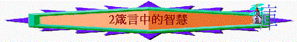

引言
「以色列王大衛兒子所羅門的箴言：要使人曉得智慧和訓誨，分辨通達的言語，」箴1:1-2
∼箴言強調智慧，究竟箴言書所提的智慧有甚麼寶貴的地方？如何能得著？
一.作者的智慧----所羅門
∼若要瞭解箴言的智慧，可以先認識箴言中其中一位作者----所羅門，因他得著從神而來的智慧，所以可以寫下箴言，箴言中的智慧可以從他從神而有的反映出來！
「所羅門說：「你僕人我父親大衛用誠實、公義、正直的心行在你面前，你就向他大施恩典，又為他存留大恩，賜他一個兒子坐在他的位上，正如今日一樣。耶和華我的神啊，如今你使僕人接續我父親大衛作王；但我是幼童，不知道應當怎樣出入。僕人住在你所揀選的民中，這民多得不可勝數。所以求你賜我智慧，可以判斷你的民，能辨別是非。不然，誰能判斷這眾多的民呢？」」王上3:6-9
1.可以處事如大衛一樣有誠實、正直、公義的智慧
「使人處事領受智慧、仁義、公平、正直的訓誨，」箴1:3
2.可以辨別是非的智慧
「要使人曉得智慧和訓誨，分辨通達的言語，」箴1:2
3.可以管理神百姓的智慧
「使愚人靈明，使少年人有知識和謀略，」箴1:4
∼所羅門曾年輕，不知怎樣管理百姓，但神給他的智慧，是可以使少年人有知識和策，管理屬神的民
4.無人能比的智慧
「我就應允你所求的，賜你聰明智慧，甚至在你以前沒有像你的，在你以後也沒有像你的。你所沒有求的，我也賜給你，就是富足、尊榮，使你在世的日子，列王中沒有一個能比你的。
你若效法你父親大衛，遵行我的道，謹守我的律例、誡命，我必使你長壽。」」王上3:12-14
「所羅門的智慧超過東方人和埃及人的一切智慧。他的智慧勝過萬人，勝過以斯拉人以探，並瑪曷的兒子希幔、甲各、達大的智慧。他的名聲傳揚在四圍的列國。」王上4:30-31
二.智慧的寶貴
1.勝過金銀
「因為得智慧勝過得銀子，其利益強如精金，」箴3:14
「耶和華所恨惡的有六樣，連他心所憎惡的共有七樣：」箴6:16
2.美過珍珠
「因為智慧比珍珠（或作：紅寶石）更美；一切可喜愛的都不足與比較。」8:11
3.無物可比
「因為智慧比珍珠（或作：紅寶石）更美；一切可喜愛的都不足與比較。」8:11
三.智慧的功效
1.得著福氣
「得智慧，得聰明的，這人便為有福。」3:13
2.得著尊榮
「高舉智慧，他就使你高陞；懷抱智慧，他就使你尊榮。」4:8
3.得著能力
「智慧人大有能力；有知識的人力上加力。」24:5
4.得蒙拯救
「智慧要救你脫離淫婦，就是那油嘴滑舌的外女。」2:16
「心中自是的，便是愚昧人；憑智慧行事的，必蒙拯救。」28:26
5.得著保護
「不可離棄智慧，智慧就護衛你；要愛他，他就保守你。」4:6
6.得著別人
「義人所結的果子就是生命樹；有智慧的，必能得人。」11:30
7.止息眾怒
「王的震怒如殺人的使者；但智慧人能止息王怒。」16:14
「褻慢人煽惑通城；智慧人止息眾怒。」29:8
四.得智慧方法
1.敬畏耶和華
「敬畏耶和華是智慧的開端；認識至聖者便是聰明。」9:10
2.認識至聖者
「敬畏耶和華是智慧的開端；認識至聖者便是聰明。」9:10
3.察看大自然
「懶惰人哪，你去察看螞蟻的動作就可得智慧。」6:6
4.察看其他人
｢我經過懶惰人的田地、無知人的葡萄園，荊棘長滿了地皮，刺草遮蓋了田面，石牆也坍塌了。我看見就留心思想；我看著就領了訓誨。｣箴 24:30-32
5.常存謙卑心
「驕傲來，羞恥也來；謙遜人卻有智慧。」11:2
6.受別人教導
「教導智慧人，他就越發有智慧；指示義人，他就增長學問。」9:9
7.聽別人勸教
「你要聽勸教，受訓誨，使你終久有智慧。」19:20
8.受別人管教
「杖打和責備能加增智慧；放縱的兒子使母親羞愧。」29:15
9.與智者同行
「與智慧人同行的，必得智慧；和愚昧人作伴的，必受虧損。」13:20
10.要追求真理
「你當買真理；就是智慧、訓誨，和聰明也都不可賣。」23:23
五.智慧人表現
1.以智慧為樂
「愚妄人以行惡為戲耍；明哲人卻以智慧為樂。」10:23
2.聽從人教訓
「智慧子聽父親的教訓；褻慢人不聽責備。」13:1
「愚妄人所行的，在自己眼中看為正直；惟智慧人肯聽人的勸教。」12:15
3.能謹守律法
「謹守律法的，是智慧之子；與貪食人作伴的，卻羞辱其父。」28:7
4.口發出知識
「智慧人的舌善發知識；愚昧人的口吐出愚昧。」15:2
「智慧人的嘴播揚知識；愚昧人的心並不如此。」15:7
5.預早積財物
「夏天聚斂的，是智慧之子；收割時沉睡的，是貽羞之子。」10:5
「智慧人家中積蓄寶物膏油；愚昧人隨得來隨吞下。」21:20
6.遠離惡的事
「智慧人懼怕，就遠離惡事；愚妄人卻狂傲自恃。」14:16
7.使父母喜樂
「所羅門的箴言：智慧之子使父親歡樂；愚昧之子叫母親擔憂。」10:1
六.要留心事情
∼當人得著智慧及聰明，仍要留心以下事情
1.不靠己聰明仍常仰賴神
「你要專心仰賴耶和華，不可倚靠自己的聰明，」3:5
2.自己的智慧不能敵擋神
「沒有人能以智慧、聰明、謀略敵擋耶和華。」21:30